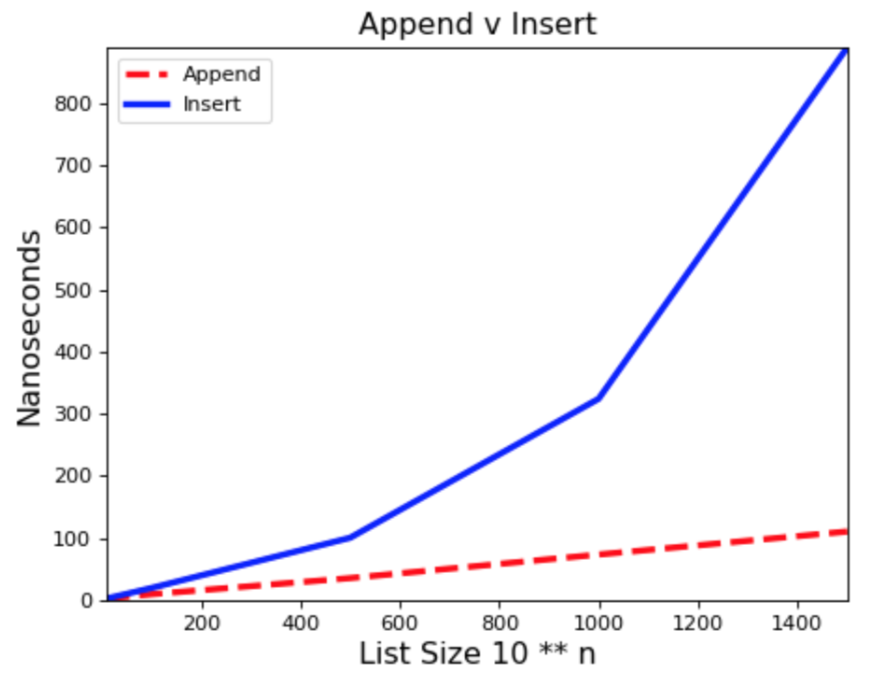
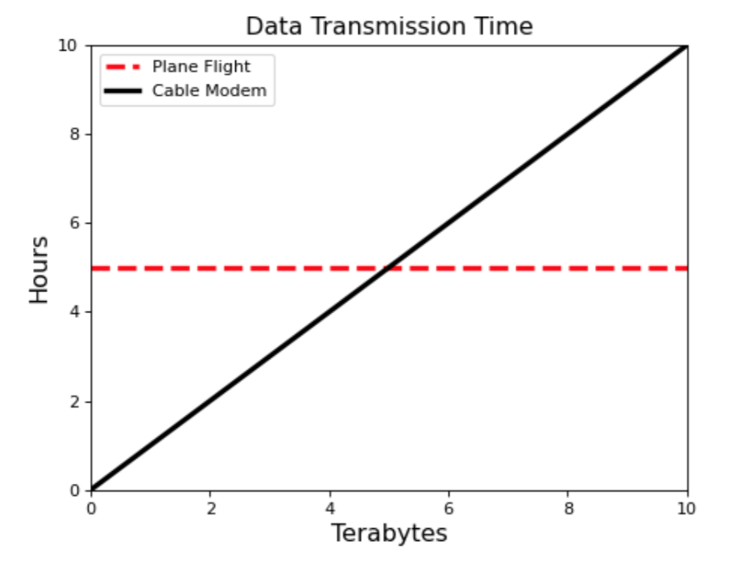
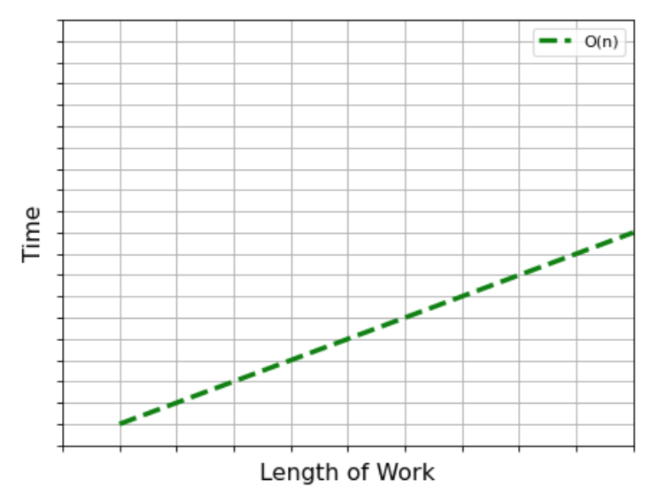
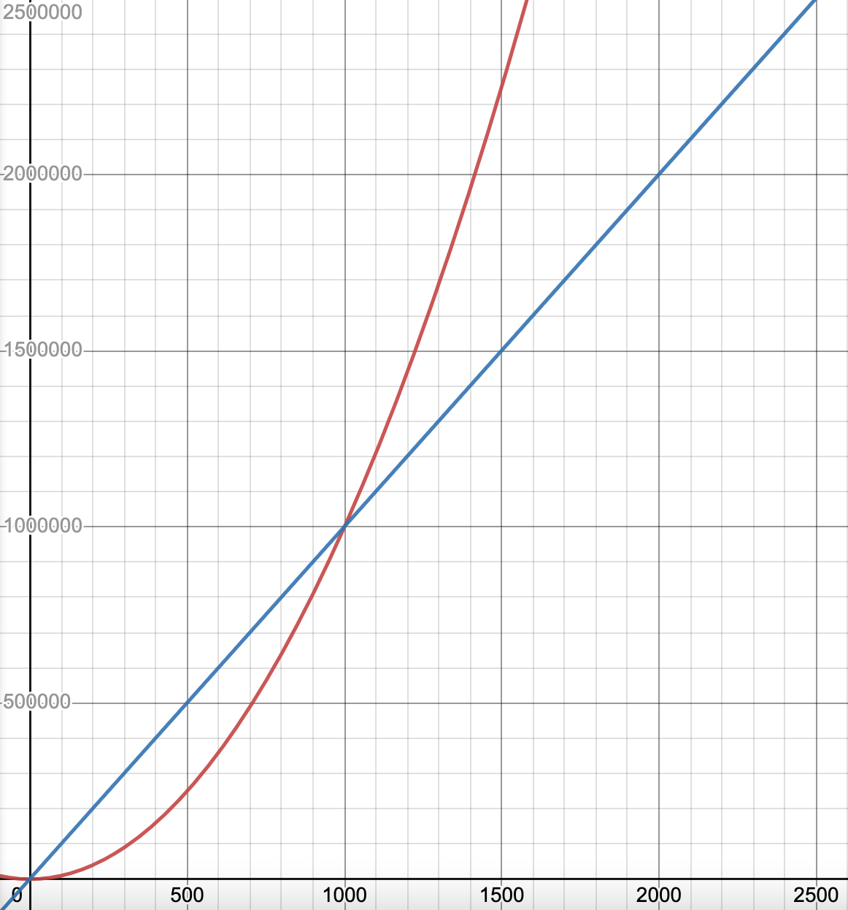
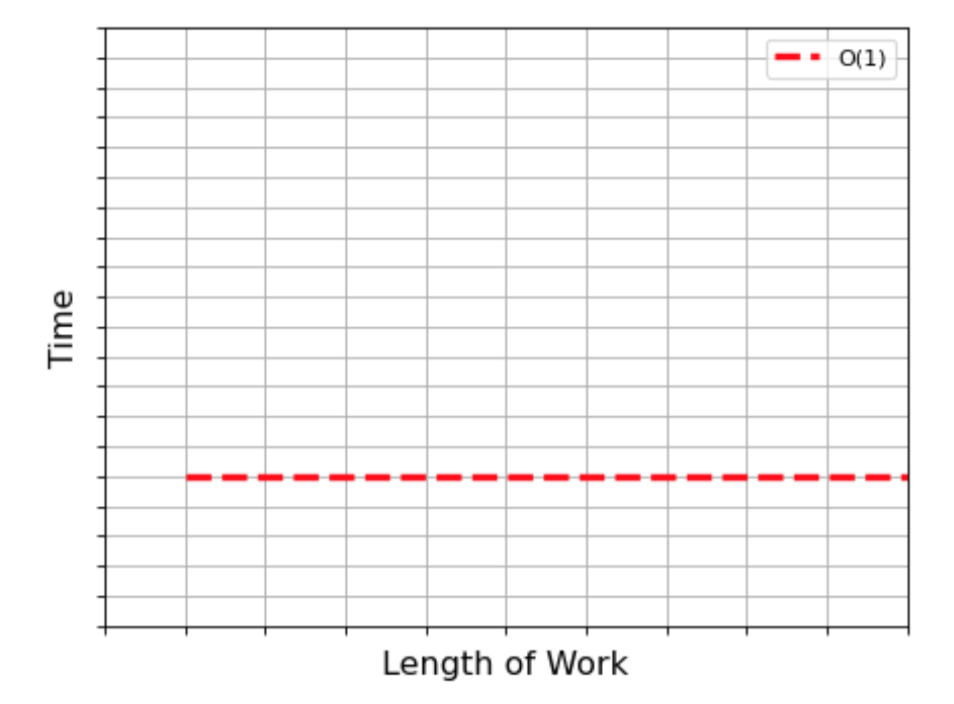
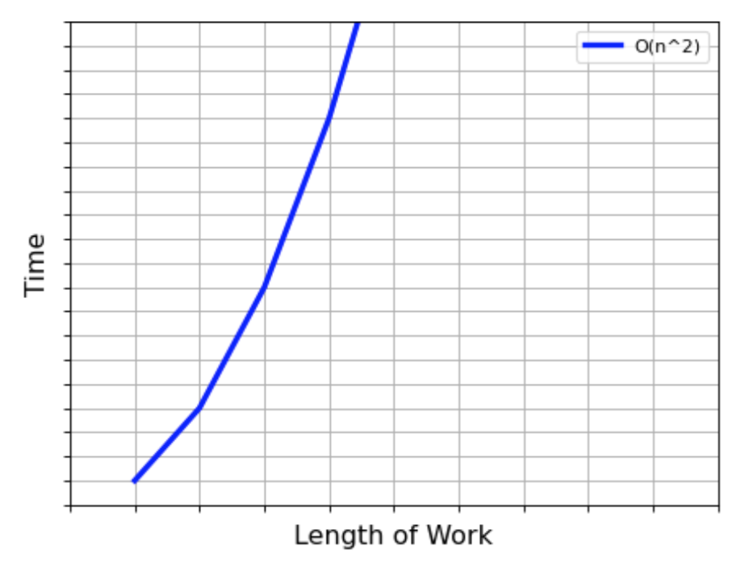
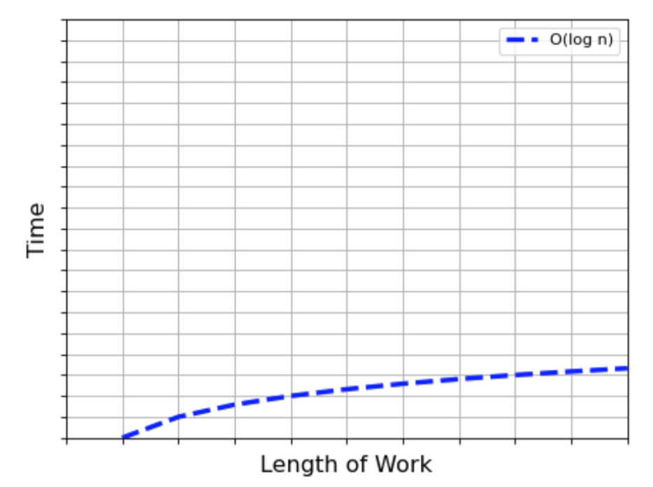
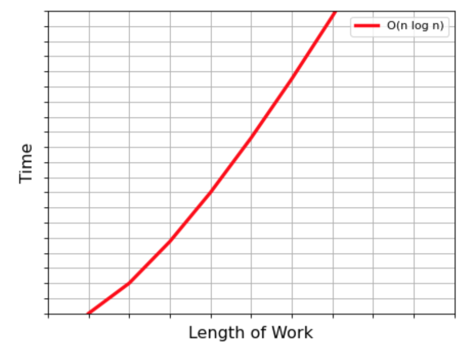
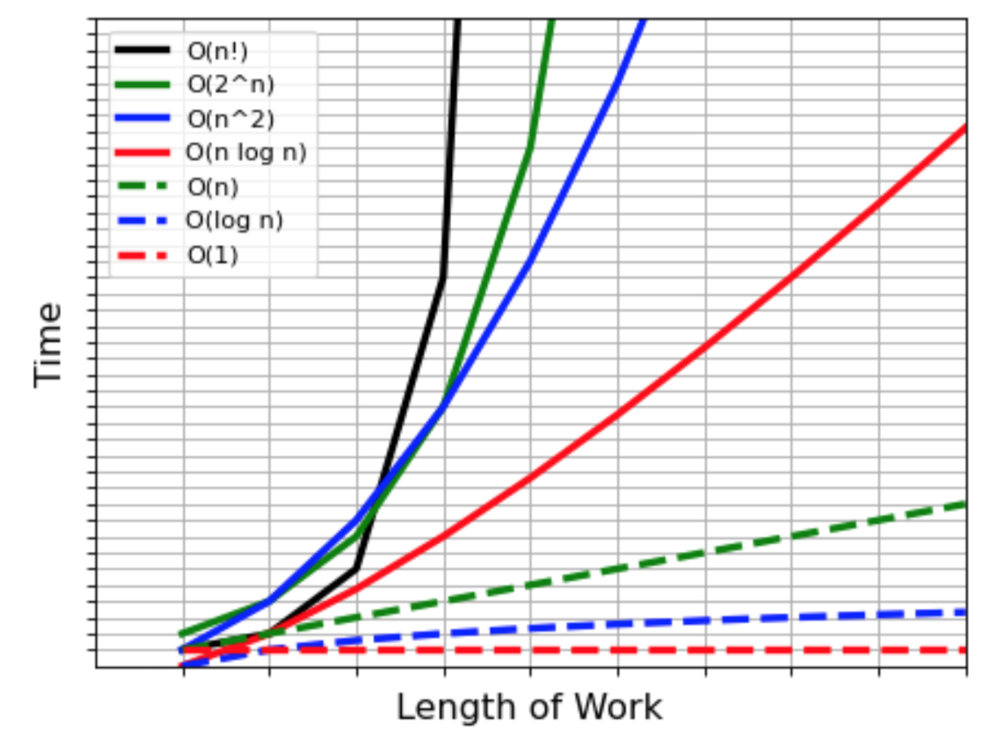

Runtime Complexity#
Measuring the “runtime complexity” of a program tells you how the speed of a program is likely to change as the size of input of the program changes. Choosing an algorithm or implementation often factors in the different runtime complexities of possible methods. This lecture introduces runtime complexity, and shows common runtimes (constant, linear, quadratic, logarithmic, and exponential).
Introduction#
Goals#
What is runtime complexity and when does it matter?
Measuring runtime
Common runtimes
Speed#
Return an array of numbers from 9999 to 0 in descending order.
let nums = [];
for (let i = 0; i < 10000; i++) {
nums.push(i);
}
nums.reverse(); // reverse array in-place
let nums = [];
for (let i = 0; i < 10000; i++) {
nums.unshift(i);
}
Right-hand version is hundreds of times slower!
Better solution
Actually, neither of these is the best solution. The fastest solution would be something like this:
let nums = [];
for (let i = 9999; i >= 0; i--) {
nums.push(i);
}
We want to scale#
Premature optimization is the root of all evil.
— Donald Knuth
Please note the “premature:” we don’t want to “micro-optimize”
Clear, simpler programs often better than faster ones
But we do care about how they “scale” — that adds up!
Times, in nanoseconds, for inserting vs appending n items:
|
append |
insert |
|---|---|---|
10 |
2 |
2 |
100 |
9 |
19 |
1000 |
73 |
324 |
10000 |
678 |
21,000 |
100000 |
7,810 |
1,950,000 |
1000000 |
84,900 |
40,323,000,000 |

Data Structures#
This means understanding how data structures work
And picking the right ones
And using them correctly
So… why do we care?#
You want to write programs that can scale
These are super-common interview questions
Runtime Complexity#
What is Runtime Complexity?#
How long does it take my program to run compared to how much workload I have, where workload is the size of the input.
Why is it important?#
A mathematical way to talk about algorithm efficiency/speed/performance
Be aware of the efficiency of your code (and make good choices!)
Common interview question: “What’s the runtime of this code?”
Example: Sending Data from SF to NYC#
Two options: send hard drives on a plane, or send via cable modem
Notice different “shapes”
“constant” for plane
“linear” for modem

Code Example#
function sumNums(nums) {
const total = 0;
for (let num of nums) {
total += num;
}
return total;
}
sumNums([1, 2, 3, 4, 5]);
One operation for initialization of
totalvariableOne operation for each addition
Total # operations: 1 + (1 × 5) = 6
Same Function, Bigger Array#
function sumNums(nums) {
const total = 0;
for (let num of nums) {
total += num;
}
return total;
}
sumNums([1, 2, 3, ..., 1000000000]);
How long will this take?
One operation for initialization of
totalvariableOne operation for each addition
Total # operations: 1 + (1 × 1,000,000,000) = 1,000,000,001
Graph: A linear relationship#

We’re most concerned with large n, since algorithms take less time for small n.
What we’re interested in is the shape of the graph, or its asymptotic behavior.
Asymptotic Behavior and “Big O”#
For any algorithm we drop any factors and constants, and pay attention to the largest growing term. This is how we figure out the asymptotic behavior.
1 + (1 × 5)
1 + (1 × 1,000,000,000)
General formula of above: 1 + (1 × n) = 1 + n
So if your list is
nlong, it takesntime to do your calculations.This function is O(n).
For
We can drop the “+ 3” (doesn’t change when we scale)
We can drop the “2 ×” (we grow in direct proportion to
n)We’d call
We can also call it linear time because the graph is a straight line.
What if the constant factor is really big, like

For
Sooner or later, better shapes always win.
Worst Case#
function isItemInArray(arr, itemToFind):
// Return true if itemToFind is in the array and false otherwise.
for (let item of arr) {
if (item === itemToFind) {
return true;
}
}
return false;
How could we measure the runtime here?
Do we have to know what is in the array?
We talk pessimistically, only about worst case.
Not useful to talk about best case:
doesn’t happen often (worst case is more likely)
most algorithms share best case, e.g. searching best case is always O(1)
Sometimes we care more about the average case than the worst case, but this is fairly rare.
Common Runtimes#
Example#
What’s the runtime?
const arr = [5, 48, 88, 24, 14];
arr[3];
A: O(1) or constant time
What’s the runtime?
const obj = {"a": 5, "b": 6, "c": 7};
obj["a"];
A: O(1) or constant time
O(1): Constant Time#

Array indexing
Looking up a value in an object
O(n): Linear Time#
A single loop
Two loops, one after the other
Addition vs. Multiplication#
If arrA and arrB each have n items, what is the runtime of:
for (let a of arrA) {
console.log(a);
}
for (let b of arrB) {
console.log(b);
}
A:
for (let a of arrA) {
for (let b of arrB) {
console.log(a, b);
}
}
A:

Two nested loops
Several inefficient sorting algorithms
Logarithmic Runtimes#
Guessing Game#
I’m thinking of a number between 1 and 100.
Try to guess the number. Every time you guess, I’ll tell you if the guess was too high or too low.
What is the best strategy to guess my number in the fewest guesses?
Here’s the code for the optimal guessing game strategy.
function findNum(maxNum = 100) {
// Binary search a number between 1 and maxNum.
// Pick a random target integer between 1 and maxNum.
const target = Math.ceil(Math.random() * maxNum);
let min = 1;
let max = maxNum;
let guess;
// while(true) loops forever until we hit a break or return.
while (true) {
guess = Math.floor((min + max) / 2); // Math.floor rounds down
if (guess === target) {
break;
} else if (guess > target) {
max = guess - 1;
} else {
min = guess + 1;
}
}
return guess;
}
findNum();
What do you think the runtime is?
Let’s say the target number is 7.
guess |
min |
max |
# possible nums |
|---|---|---|---|
50 |
1 |
49 |
49 |
25 |
1 |
24 |
24 |
12 |
1 |
11 |
11 |
6 |
7 |
11 |
5 |
9 |
7 |
8 |
2 |
7 |
|
|
1 |
The number of possible numbers gets (approximately) cut in half every time.
How many times do you have to cut 100 in half before you get 1 (or less)?
That is the same as the max number of guesses you will need.
It’s also the same as: How many times do you have to double 1 before you get 100 (or more)?
This number
So the runtime of the algorithm is O(log n).
Logarithms are assumed to be in base 2
In computer science, we work with binary so much that logarithms are generally assumed to be in base 2. So the 2 is usually not written. But for clarity’s sake, the runtime would be O(
O(log n): Logarithmic time#

“Divide and conquer”
Binary Tree Search
O(n log n): Logarithmic time#

More complex “Divide and conquer”
Efficient sorting algorithms
What’s the Difference?#
log n < n < n log n <
For n = 1000:
log n |
n |
n log n |
|
|---|---|---|---|
9.97 |
1000 |
9970 |
1,000,000 |
Less Common (and Very Slow) Runtimes#
Example: Password Cracking
Say there are 72 valid chars for a password
If password is 1 char there are 72 possibilities
For 4 chars that’s 72 × 72 × 72 × 72 (or
For 10 chars that’s 7210 or 3,743,906,242,624,487,424
O(n!): Factorial Time#
Example: List all possible ways to arrange 4 books on a shelf
4 choices for the first book
3 remaining choices for the 2nd book
2 remaining choices for the 3rd book
Only one remaining choice for the last book
Total: 4 × 3 × 2 × 1 = 4! = 24
For 20 books: 20! = 2,432,902,008,176,640,000
Sets#
Sets#
A Set is an unordered collection of items that cannot contain any duplicates.
Think of a box of crayons: there’s no order, and no two crayons are the same
To create a new empty Set:
let mySet = new Set();
Using Sets#
A Set can be created from an array. Any duplicates will be automatically removed.
let mySet = new Set(['red', 'blue', 'green', 'blue', 'yellow']); console.log(mySet); // Set(4) { 'red', 'blue', 'green', 'yellow' }
You can loop through a Set with
for...of:for (const item of set2) { console.log(item); }
Indexing won’t work because sets are unordered
console.log(mySet[0]); // undefined
Trying to add an item that’s already in the set will do nothing:
let mySet = new Set(['red', 'blue', 'green', 'yellow']); mySet.add('green'); // nothing happens
Common operations with Sets:
mySet.size; // get # of items in set
mySet.add('orange'); // add item to set
mySet.delete('red'); // remove item from set
mySet.has('blue'); // check if item is in set
Sets and Runtime#
What is the runtime?
function sumToZero(nums) {
// Return true if any two numbers in the array sum to zero.
for (const x of nums) {
if (arr.includes(-x)) {
return true;
}
}
return false;
}
sumToZero([5, 9, 10, -2, 10, -5]);
Runtime is
.includes() is a “hidden for loop” and runs in linear time.
Checking if an item is in an array requires iterating through the array.
Here’s a more efficient way to do it:
function sumToZeroWithSet(nums) {
// Return true if any two numbers in the array sum to zero.
const numsSet = new Set(nums);
for (const x of nums) {
if (numsSet.has(-x)) {
return true;
}
}
return false;
}
The for loop still takes linear time, but set lookup is O(1).
So the overall runtime is O(n) × O(1) = O(n).
Using Runtimes#
Runtime Comparison#

What Do These Equal?#
For n = 100:
Type |
Runtime |
Result |
|---|---|---|
Constant |
O(1) |
1 |
Logarithmic |
O(log n) |
6.64 |
Linear |
O(n) |
100 |
Linearithmic |
O(n log n) |
664 |
Quadratic |
O( |
10,000 |
Exponential |
O( |
1.27 million trillion trillion |
Factorial |
O(n!) |
9.33 × 10157 |
Rules of Thumb#
Object/set lookup and list indexing is O(1) or constant
Searching in a list is O(n) or linear
A single loop or multiple non-nested loops are O(n), or linear
Two nested loops is
If you divide work by half every time, you get O(log n) or logarithmic
If you do
nworklog ntimes, O(n log n)
Looking Ahead#
More data structures